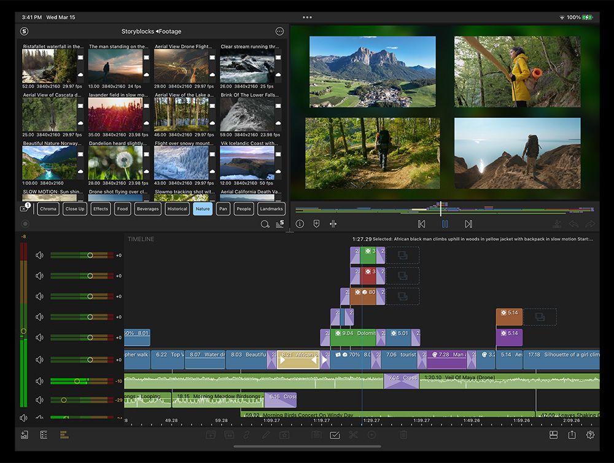
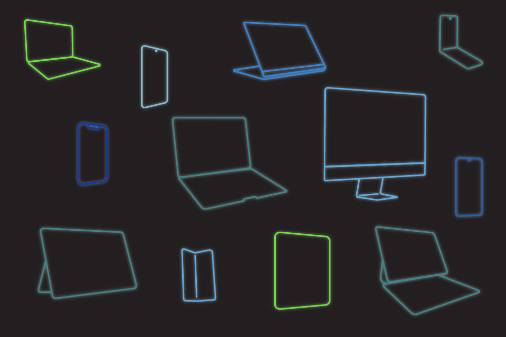

每周三条短视频的移动剪辑流水线：LumaFusion嵌进去之后省了多少事
从外接硬盘直读到项目包接力，从品牌字体到Frame.io审片——把移动剪辑的完整工作流串起来，每个环节讲具体怎么接。
我每周要做三条短视频：周一拍产品开箱、周三出一条教程、周五剪一条实拍vlog。内容不算重，但以前这条链路让我很烦——素材分散在三个地方、换设备接力要拷贝半小时、每次导出后还要手动传网盘给运营，光是这些"剪辑之外的事"就要多花两个多小时。
把 LumaFusion 嵌进这套流程之后，这些环节被砍到了原来的三分之一。这篇不讲它能剪什么特效、能拉多少轨道，就讲具体怎么把它当成生产力链的一环，把前后工具串起来。
旧流程卡在哪
先摊开说以前是怎么干的——这些堵点估计不少同行都熟：
- 素材采集是乱的：手机拍的在相册，相机SD卡导到Dropbox，合作方的片段在微信文件传输助手。每次开工先花15分钟把三处东西攒到一个云盘文件夹里；
- 换设备接力要拷：手机平板都装了剪辑软件，手机出门拍好的素材要传到平板上剪，用AirDrop传10G素材等半小时是家常便饭；
- 工程交接没章法：剪到一半平板没电了，换手机想接着来——找不到上次的工程文件，或者找到了但素材路径全断了；
- 收尾环节要手动传：成片导出后用文件管理器找文件、传到网盘、复制链接发群，运营那边还要再下载一遍。
这些事不在剪辑时间线里，但每一条都卡在剪辑和上线之间，攒起来就是一条没走通的流水线。
新流程：LumaFusion在整条链里的位置
现在的流程是这样的，LumaFusion插在中间四步，前后各自接两个工具：
[素材采集] → [媒体库统一] → [剪辑时间线] → [接力/备份] → [导出交付] → [审片协作]
外接硬盘 LumaFusion LumaFusion 云盘归档 成片/FCPXML Frame.io下面每个环节讲具体怎么接。
环节一：素材采集——外接硬盘直读，免拷贝
这是整条链最关键的一步，以前素材到处跑的根源是"拍完就要拷进机身"。
现在用 USB-C 接口的移动硬盘当素材中转：手机相机拍的时候直接把视频写进外接盘，LumaFusion 的媒体库支持链接文件夹模式——素材留在盘里不动，应用直接引用，不拷贝一份进机身存储。拍完拔盘插平板，媒体库直接看到所有素材，少了两次手动复制（手机→机身、机身→平板）。
媒体库不止管外接盘，它能统一接六类来源——这些在官网的功能页里有完整列表：系统相册兜底、Dropbox/OneDrive 云盘同步、Frame.io 协作平台素材、甚至 Storyblocks 订阅素材库都能在应用内直接浏览取用。我现在只需要把微信里收的合作方片段丢进 Dropbox，其他所有拍摄素材直接落外接盘——开工时媒体库一个窗口能看到全部。
环节二：剪辑时间线——预设先存好，品牌字体一次搞定
装好之后进入时间线——安装包从官方下载拿。有两个我反复踩过的坑现在用预设堵上了。
第一是品牌字体。默认字体撑不起系列内容的识别度，每一条视频的片头和字幕要统一用自家字体。以前每次开新工程都要重新导入字体文件、在标题编辑器里选一遍、调字号和描边。现在字体导入一次之后存在应用里，字幕预设保存成模板，开新工程时直接拖预设进去——片头 Logo、字幕字体、描边粗细一次到位，不用每条都调。

第二是高帧率慢动作。我拍产品细节的时候会开120fps，以前用手机自带编辑慢放出来要么卡顿要么糊掉。现在在速度编辑器里直接改倍数——源素材帧率够，放慢到25%还能保持流畅，配合"保持音高"选项，人声慢放不会变调。
环节三：接力与备份——双保险，换设备不丢工程
平板剪到一半要出门，或者想换台设备继续——两种方案。
轻量级接力：项目管理器里做一次归档备份。归档保存时间线结构和素材引用关系，不拷素材本体——所以几秒钟就存完。归档文件丢云盘同步，手机端打开云盘拉归档恢复，工程原样回来。重改动之前（全片调色、重新配乐）先归档一次，改坏了能回滚。
完整版迁移：换设备或交给别人继续剪的时候，用项目包导出。项目包不止结构，连素材一并装箱，得到一个完整工程文件。在新设备导入，工程和素材全部还原——前提是导出前确认外接盘和云盘的外链素材也被打包了，不然新设备打开会看到一片离线红。

iOS 到 Mac 还有一个特殊出口：时间线能导出成 FCPXML，然后在 Mac 的 Final Cut Pro 里继续精修。这条链路适合"移动先粗剪、桌面端做精修调色"的重活项目——我偶尔接到商业片时会走这条。
环节四：导出交付——两条出口，看下游接什么
成片导出有两条路：
- 直接出片：视频文件导出来，丢进 Frame.io 的项目空间。运营同学在 Frame.io 上能直接预览、画框评论、改哪里标哪里，不用下载原片来回传。LumaFusion 本身支持 Frame.io 的双向同步——导出的时候直接上传 Frame.io，省了最后那步手动传网盘；
- 交给桌面精修：时间线导 FCPXML，Mac 上 Final Cut Pro 继续——移动端做采集和粗剪，桌面端做调色和特效，LumaFusion 相当于整条链的"前置采集器"。
实操里最容易断链的两个点
上面说的都是理想状态，实际跑下来有两个环节容易卡，提前说清楚。
外接盘链接偶发断链：LumaFusion 的媒体库引用的是外接盘的文件路径，如果你在系统文件管理器里给素材移过位置或改了名字，应用里就会出现"离线"状态。解决办法是——素材落盘后只在应用里管理（它支持多选、搜索、颜色标签），别去其他文件管理器动。实在要挪，挪完在媒体库里重新链接一下就行。LumaFusion文档里有个更系统的整理方法，花两分钟给关键片段打颜色标签比后期到处找省事得多。
项目包导出要查外链素材：这个我踩过一次大的——把工程包发给外包同学，他打开发现一半素材离线，原因是那部分素材是从 Frame.io 链接进来的，导出项目包时没有把外链素材打进去。现在养成习惯：导出前先扫一遍素材列表的来源标记，带"外链"标识的手动点"包含进项目包"。
效果和边界
跑了两个月，这套流程的实际效果：
- 剪辑前的素材整理：15分钟 → 0分钟（外接盘直读）；
- 设备接力等待：30分钟 → 几秒钟（归档同步）；
- 收尾交付：手动传网盘 → Frame.io 直接同步，省了一次上传一次下载；
- 品牌字体重复调：每条视频3分钟 → 一次性预设。
总共每周少了大概3小时的"剪辑之外"的时间。
但这套流程有边界，不是所有场景都划算。如果你的素材量很小（比如手机相册里几十条片段随手剪），外接硬盘和项目包这套就显得重了——直接用系统相册导入，单设备剪完拉倒。另外 iOS 独占功能（多机位同步、FCPXML 导出）在安卓端没有，iOS 剪一半换安卓接力，这些功能做的改动会丢失。
顺手交代一句
这套工作流的核心是把 LumaFusion 当"链"来用，而不是当一个孤立的剪辑 App 来用。素材采集环节接外接硬盘，媒体库环节接云盘和协作平台，导出环节接 Frame.io 或 Final Cut Pro——它在整条流水线里是中枢，但不是终点。要拼出自己的流程，先搞清楚你的上下游工具是什么，再看它在哪能接上。上面提到的这些功能细节和项目包导出的注意事项，我整理的素材和参考资料同时放在三个仓库——GitHub上能找到完整归档，国内用户访问慢的话可以去Gitee看镜像，GitCode那边留了一份备份。